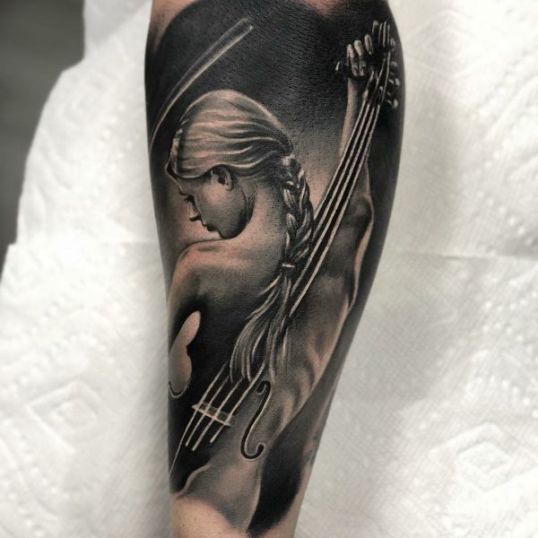
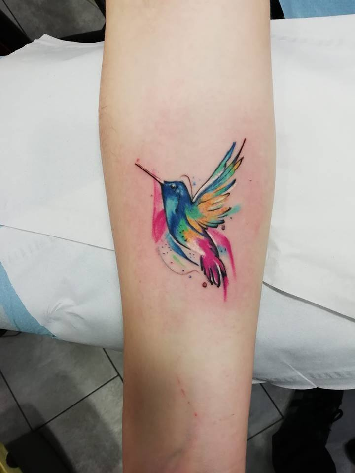
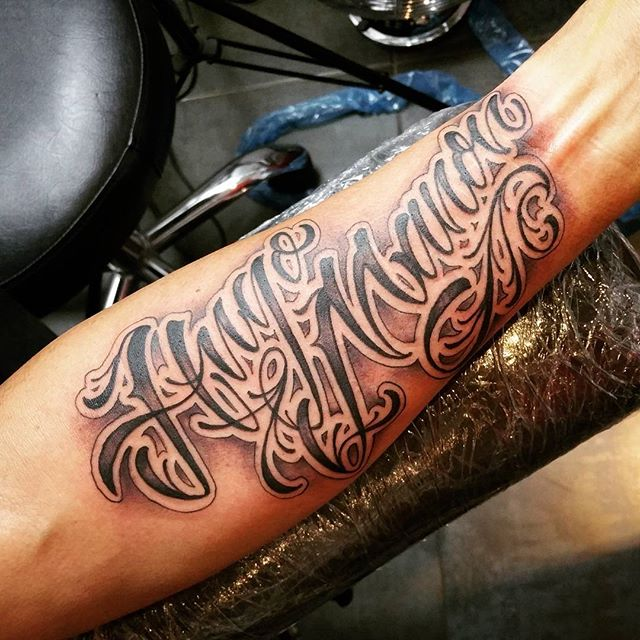
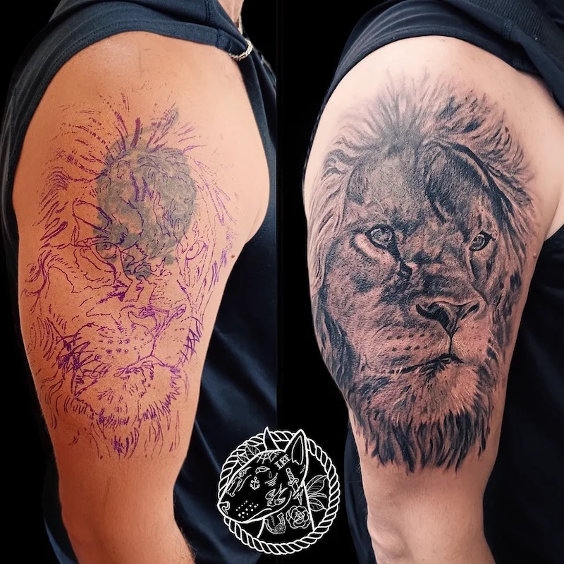

Nos Prestations

Noir & Gris
Un style classique et intemporel, parfait pour les portraits et les ombrages détaillés.

Couleur
Des œuvres vibrantes et expressives qui attirent tous les regards.

Lettrage
Des mots puissants, des citations ou des noms avec un style typographique unique.

Cover / Recouvrement
Envie d'effacer un ancien tatouage ? On crée une nouvelle œuvre par-dessus.
Dessin personnalisé
Une création 100% unique, faite selon vos idées et vos inspirations.